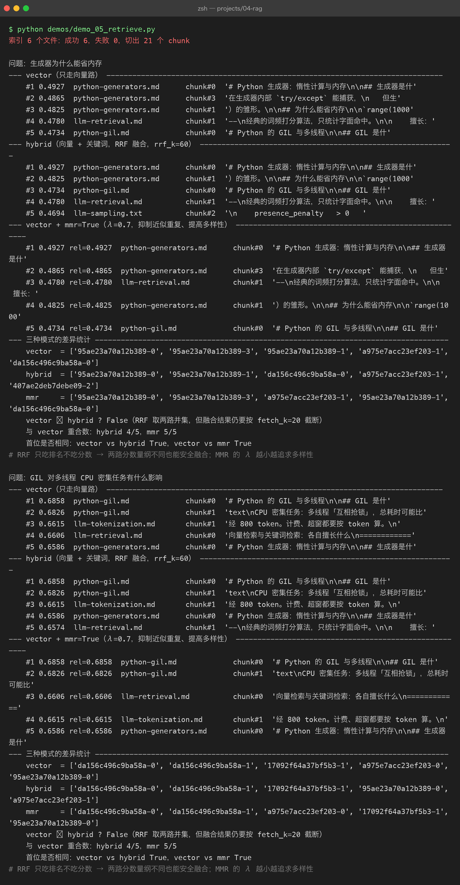
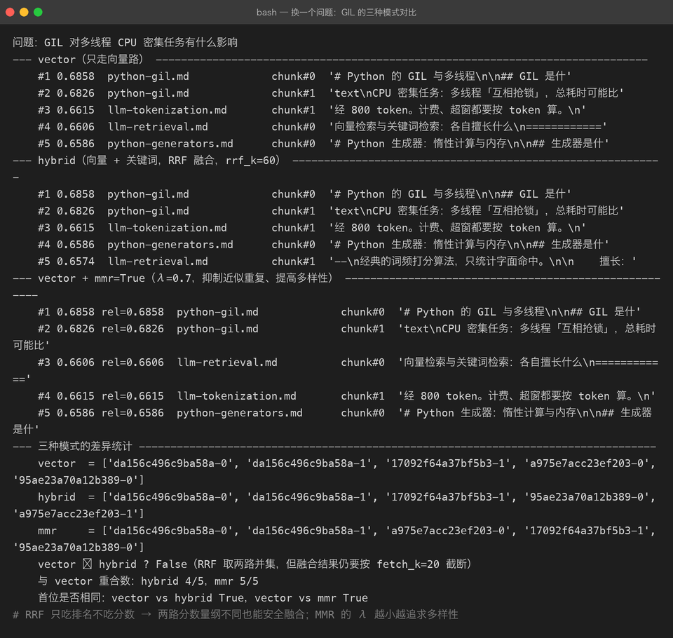

Project 04 — Chapter 05：Retrieval【检索流程】
状态：✅ 已成文（文档先行，作为 src/ 落地设计依据） 对应代码：
src/rag/retriever.py（代码落地时实现）
1. 本章要解决什么问题
Chapter 04 结束时，我们已经有一个装满向量的数据库：文档被切好块（Chapter 02）、算好嵌入（Chapter 03）、存进了向量库（Chapter 04）。看起来万事俱备——但实际上什么检索都还没发生。用户敲进来一句「怎么配置重试策略？」，这条 query 还是自然语言，向量库里存的还是一堆 float，两者之间需要一条完整的流水线把它们接起来。
先划清两章的边界：本章（05）讲的是检索的流程与策略——query 怎么预处理、取多少条、向量检索和关键词检索怎么配合、怎么避免取回来的全是同义重复；下一章（06）讲的才是度量原理——「两个向量有多相似」这件事在数学上到底怎么算。一个是工程流水线，一个是流水线上最核心的那个度量件。本章在用到「相似度」时只当黑盒调用，细节留给 06。
一个常见误解：
你以为： 向量库里"搜"一下，最相关的段落就自动排好队出来了
实际上： 检索是一整条策略流水线——k 取多少、单路还是混合、
要不要过滤、要不要打散，每一步都是设计决策本章目标：
用 Retriever 把「query → 相关 chunk 列表」封装成一步可靠调用，并让 top-k、混合检索、多样性这些策略变成可调参数。
2. 为什么需要这个知识
RAG 的效果上限，在生成之前就被检索锁死了。这条链路是这样的：
检索质量 = RAG 上限
生成模型再强，也只是在"喂给它的材料"里作答
材料里没有答案 → 模型要么瞎编，要么回答"文档里没有"这和 Java 里的分层很像：Service 逻辑写得再漂亮，DAO 层查错了表，出来的结果照样是错的。检索就是 RAG 的 DAO 层。
而且检索错误有个阴险的特点：它是静默的。向量库永远会返回 k 条结果——哪怕这 k 条和问题毫无关系。没有异常、没有日志、没有空指针，只有一段看起来一本正经但答非所问的生成结果。所以检索层的每一步策略都必须显式设计，而不是依赖默认值。
3. 核心概念
3.1 检索的完整流程
一条 query 从用户输入到变成 chunk 列表，经过五步：
用户 query
↓ ① 预处理：截断/清洗（query 长度受 embedding 模型输入上限约束）
↓ ② embed：query → 向量（必须用和入库时同一个 embedding 模型！）
↓ ③ 向量库 top-k：按相似度取 k 条最近的 chunk
↓ ④ 可选 metadata 过滤：如 {"source": "python-doc", "lang": "zh"}
↓ ⑤ 返回 list[ScoredChunk]：chunk 文本 + 相似度分数 + 元数据两个最容易忽略的点：
- ② 和入库必须用同一模型、同一维度。用模型 A 编码的库，拿模型 B 的 query 向量去搜，等于拿身高去比体重，结果完全是噪声。
- ④ 过滤发生在向量搜索之后（post-filter）还是搜索时（pre-filter）取决于向量库实现，但对你来说 API 语义是一致的：先缩小范围再排序。
3.2 top-k 的权衡
k 不是越大越好，它是召回率 vs 噪音的跷跷板：
| k 值 | 好处 | 代价 |
|---|---|---|
| 太小（1~2） | 上下文干净、省 token | 真正相关的段落可能不在其中（漏召回） |
| 适中（4~8） | 覆盖率与噪音的平衡点 | — |
| 太大（>20） | 几乎不漏 | 噪音淹没重点；挤占上下文窗口预算；模型被无关内容带偏 |
还有一笔隐形的账：上下文预算。第 08 章拼 context 时，每个 chunk 几百 token，k=20 就是上万 token，可能直接顶到模型上限，还稀释了真正的答案。工程上有个经典组合拳：
粗召回取大 k（如 20），精排后只留前 5——这就是 Chapter 07 rerank 的入场券。本章先在
Retriever里把「召回 k」和「最终 n」分成两个参数，为它留好接口。
3.3 混合检索与 RRF
纯向量检索有软肋：它擅长语义（「怎么让程序等一会」→ 能召回「sleep / 延迟执行」），但搞不定精确符号——函数名 setTimeout、类名 BaseVectorStore、报错码 ECONNRESET 这种专有名词，被 embedding 压成向量后反而被「泛化」掉了。
反过来，BM25 关键词检索（一种经典的词频打分算法）正好相反：精确匹配是强项，同义改写就抓瞎。两边互补：
| 向量检索 | BM25 关键词检索 | |
|---|---|---|
| 同义改写（"卡住了" → "阻塞"） | ✅ 强 | ❌ 弱 |
| 精确词/专有名词/代码标识符 | ❌ 弱（被语义泛化稀释） | ✅ 强 |
| 跨语言语义 | ✅ 可 | ❌ 基本不行 |
| 索引构建 | 需 embedding（贵、慢） | 分词即可（便宜） |
两路各取 top-k，怎么合并排名？分数不能直接相加（原因见踩坑 3），业界标准做法是 RRF（Reciprocal Rank Fusion，倒数排名融合）：
RRF_score(doc) = Σ 1 / (k + rank_i) # k 是平滑常数（常取 60），rank_i 是它在第 i 路的排名（从 1 开始）它只看排名不看分数，天然规避了两路分数量纲不同的问题。实现只需要十几行：
def rrf_fuse(rankings: list[list[str]], k: int = 60) -> list[str]:
"""rankings: 每一路检索返回的 id 有序列表；返回融合后的 id 有序列表"""
scores: dict[str, float] = {}
for ranking in rankings:
for rank, doc_id in enumerate(ranking, start=1):
scores[doc_id] = scores.get(doc_id, 0.0) + 1.0 / (k + rank)
return [doc_id for doc_id, _ in sorted(scores.items(), key=lambda x: -x[1])]在两路都出现的文档会拿到两份加分，自然浮到最上面——这正是我们想要的：语义和关键词都认可的文档，最可能是答案。
3.4 MMR：别让 top-k 全是同义重复
还有一个隐蔽的浪费：向量检索的 top-k 经常是同一段内容的三种说法。查询「Python 列表怎么追加元素」，返回的可能是「append 用法」「在列表末尾添加元素」「list 添加项」三个几乎一样的段落——3 个名额花在了 1 个信息点上。
MMR（Maximal Marginal Relevance，最大边际相关性）在选每一条时同时考虑两点：
MMR = λ × 与 query 的相似度 − (1−λ) × 与已选结果的最大相似度- λ=1：退化为普通 top-k（只顾相关）；
- λ=0：只顾彼此最不相似（太散）；
- 实践常取 0.5~0.7：既要相关，也要互不重复。
Java 里这就像给 LinkedHashSet 去重，只是这里的「重复」是向量夹角意义上的重复，需要边选边算。


4. 动手实现（设计稿）
以下代码将在
src/rag/retriever.py落地时实现，这里先当设计稿读。它组合前几章的两个抽象：BaseEmbeddingClient（Chapter 03）和BaseVectorStore（Chapter 04）。
"""src/rag/retriever.py — 检索门面：把 embed + 向量库搜索封装成一步调用"""
from __future__ import annotations
from dataclasses import dataclass, field
from rag.embedding_client import BaseEmbeddingClient
from rag.vector_store import BaseVectorStore, ScoredChunk, SearchFilter
@dataclass
class Retriever:
"""检索门面。
Java 类比：一个 @Service 聚合了 EmbeddingDao 和 VectorStoreDao，
对上层只暴露一个 retrieve() 方法。
"""
embedding_client: BaseEmbeddingClient
vector_store: BaseVectorStore
rrf_k: int = 60 # RRF 平滑常数
mmr_lambda: float = 0.7 # 1.0 = 纯相关性；0.5~0.7 兼顾多样性
def retrieve(
self,
query: str,
top_k: int = 5,
filter: SearchFilter | None = None,
mode: str = "vector", # "vector" | "hybrid"
mmr: bool = False,
fetch_k: int = 20, # 粗召回数量（mmr / rerank 场景取大值）
) -> list[ScoredChunk]:
if not query or not query.strip():
raise ValueError("query 不能为空")
query = self._truncate(query) # ① 预处理：截断
query_vec = self.embedding_client.embed(query) # ② 单条嵌入
if mode == "vector":
hits = self.vector_store.search(query_vec, top_k=fetch_k, filter=filter)
elif mode == "hybrid":
hits = self._hybrid_search(query, query_vec, fetch_k, filter)
else:
raise ValueError(f"未知 mode: {mode!r}（可选 vector / hybrid）")
if mmr and len(hits) > top_k:
hits = self._mmr_select(query_vec, hits, top_k)
return hits[:top_k] # 粗召回 → 最终 top_k
# ---- 内部方法 ----
def _truncate(self, query: str, max_chars: int = 1024) -> str:
"""embedding 模型有输入上限，超长 query 静默截断会丢失语义，这里显式处理"""
return query[:max_chars]
def _hybrid_search(self, query: str, query_vec, fetch_k, filter):
# 向量路：语义召回
vec_hits = self.vector_store.search(query_vec, top_k=fetch_k, filter=filter)
# 关键词路：BM25 精确召回（BM25Index 由 Chapter 04 附带提供）
kw_hits = self.bm25.search(query, top_k=fetch_k, filter=filter)
# RRF 只认排名不认分数 → 两路安全融合
fused_ids = rrf_fuse(
[[h.chunk_id for h in vec_hits], [h.chunk_id for h in kw_hits]],
k=self.rrf_k,
)
by_id = {h.chunk_id: h for h in vec_hits + kw_hits}
return [by_id[i] for i in fused_ids]
def _mmr_select(self, query_vec, hits, top_k) -> list[ScoredChunk]:
"""贪心 MMR：每轮选出 lambda*sim(query) - (1-lambda)*max_sim(已选) 最大的那条"""
selected: list[ScoredChunk] = []
candidates = list(hits)
while candidates and len(selected) < top_k:
best, best_score = None, float("-inf")
for cand in candidates:
rel = self.vector_store.similarity(query_vec, cand.vector)
if selected:
max_div = max(
self.vector_store.similarity(s.vector, cand.vector)
for s in selected
)
else:
max_div = 0.0
score = self.mmr_lambda * rel - (1 - self.mmr_lambda) * max_div
if score > best_score:
best, best_score = cand, score
selected.append(best)
candidates.remove(best)
return selected设计要点：
- 一个方法对外：上层（第 09 章的 pipeline）只需要
retriever.retrieve(query, top_k=5)，策略全部带默认值——Java 里「门面 Service 聚合多个 DAO」的同款思路。 - 策略是参数不是类：
mode/mmr用参数切换而不是搞出HybridMmrRetriever子类，避免类爆炸。 - 错误显式化：空 query 直接抛
ValueError，不静默返回空列表——检索错误本来就是静默的，能提前炸的都提前炸。
为什么不用 LangChain 的
VectorStore.as_retriever()？框架把这些策略都封装好了，但封装也意味着你看不见「RRF 为什么用排名不用分数」「MMR 的 λ 怎么影响结果」。手写一遍，框架在你眼里就从黑盒变成透明盒。
5. 踩坑清单
坑 1：query 太长，超出 embedding 模型输入上限
现象：长问题（比如用户把整段报错日志贴进搜索框）检索结果莫名其妙，或 API 直接报 413/超长错误；更阴险的是某些实现静默截断，日志里毫无异常，只是结果越来越差。
原因：embedding 模型有输入 token 上限（如 512 或 8192），超限部分被截掉。你贴的日志里真正有信息量的报错码恰好排在后面，全被剪没了。
正确做法：在 Retriever 入口显式截断（如 _truncate），或做「日志提纯」——只取报错信息那几行再检索。原则：宁可显式截断并打日志，也不要让底层静默剪。
坑 2：metadata 过滤条件写错字段名，静默返回空
现象：加了个过滤 filter={"sorce": "python-doc"}（source 拼错），检索永远返回 0 条，但程序不报错，你以为是「库里没资料」排查了半天。
原因：很多向量库对不存在的过滤字段做「不匹配」处理而不是报错，属于静默失败。
正确做法：① 过滤字段名集中定义为常量或 dataclass（SearchFilter(source=...)），杜绝裸 dict 手写；② 首次接入某批数据时，先不带 filter 验证有结果，再逐步加 filter 验证每一步结果集不为空。
坑 3：hybrid 两路分数直接相加
现象：把向量相似度（0~1）和 BM25 分数（可能是 3.7、15.2 这种没上限的值）直接加权求和，结果关键词路永远碾压向量路，混合检索退化成纯 BM25。
原因：两路分数量纲完全不同，BM25 没有归一化到固定区间，直接相加等于拿米和斤做加法。
正确做法：用 RRF——它只消费排名（第 1 名、第 2 名……），排名天然无量纲。除非你能保证两路分数都做了统一的 min-max 归一化，否则不要碰加权求和。
坑 4：查询时换了 embedding 模型
现象：换了新的 embedding 模型重新生成 query 向量，但库里的向量还是老模型生成的，检索结果像随机数。
原因：不同模型的向量空间互不相通，维度都可能对不上。
正确做法：向量库里记录 embedding 模型名（Chapter 04 的 collection metadata），查询时校验一致；换模型必须全量重建索引。
6. 自检清单
- [ ] 能不看笔记说出检索五步：预处理 → embed → top-k → 过滤 → 返回
- [ ] 能解释 k 太小和 k 太大各会出什么问题，以及「粗召回 20 + 精排 5」的动机
- [ ] 能说出向量检索和 BM25 各自的强弱场景，并解释为什么混合检索用 RRF 而不是分数相加
- [ ] 能手写
rrf_fuse()并解释常数 60 的作用 - [ ] 能解释 MMR 的 λ 从 0 到 1 变化时，结果会发生什么
- [ ]
Retriever.retrieve()的参数含义（top_k / filter / mode / mmr / fetch_k）全部能对上号
上一章：04-vector-database.md —— 向量已经存进库里，就差一条查询指令。
下一章：06-similarity-search.md —— 本章调用的「相似度」黑盒，是时候打开看里面的数学了。